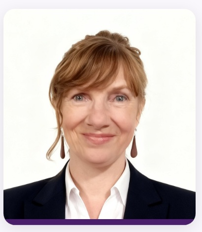
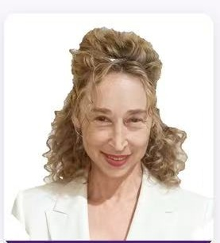
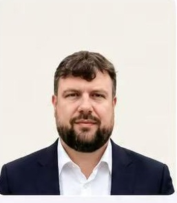
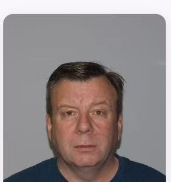
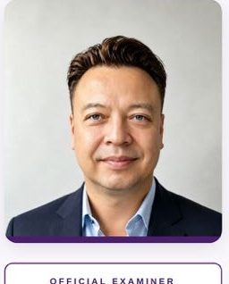
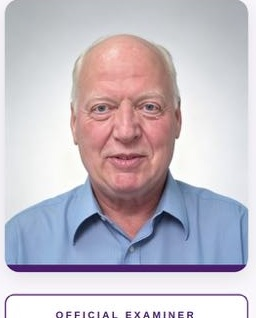
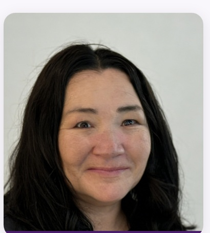
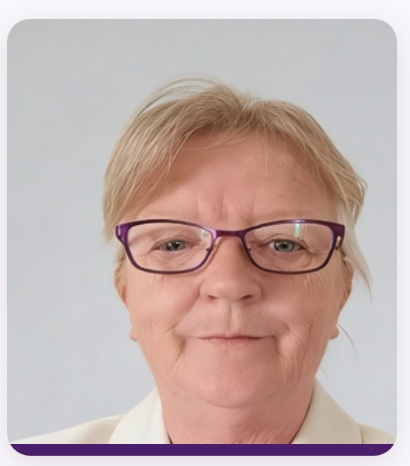
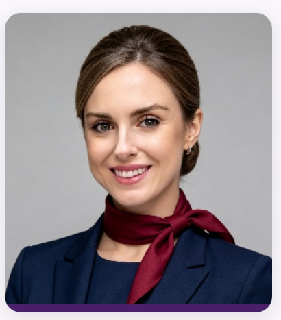
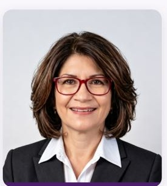

前雅思考官
英国
Alec
前雅思口语与写作考官
20年以上亚洲教育经历；曾于2018—2021年在广州担任雅思考官。
从前雅思考官到资深英语教师，认识我们的 11 位团队成员，了解他们的经历、教学特点与专长，找到适合自己学习目标的老师。

每位老师都有不同的教学优势。点击筛选，或打开教师详情查看完整简介。资料根据团队提供的教师介绍整理，考官任职均为过往经历。
20年以上亚洲教育经历；曾于2018—2021年在广州担任雅思考官。

前雅思考官自2008年起担任雅思考官，长期关注考生在口语与写作中的评分难点。

前雅思考官英国巴斯大学 TESOL 硕士；具备雅思与剑桥英语考试评估背景。

前雅思考官曾于2011—2015年担任英国文化协会雅思考官，拥有丰富的中国教学管理经历。

前雅思考官曾担任 IDP 雅思考官，著有雅思写作与口语备考教材。

前雅思考官美国语言学硕士；曾任高校学术写作教师及雅思考官。

专业教师拥有14年以上商业与管理经验，专注实用职场英语表达。
持有 TESOL 与雅思教学认证，专注口语表达及自信培养。

专业教师澳大利亚 TESOL 与 TEFL 资质，兼有商科及会计英语教学背景。

专业教师持有国际 TESOL 认证，具有航空服务与国际教学背景。

专业教师TESOL 认证教师，拥有科研和学术背景。
不同阶段的学生，需要解决的问题也不同。我们希望让学生在报名前就能清楚认识教师的背景和教学方向。
聚焦语言准确性、表达逻辑、写作论证、发音和流利度等具体问题。
前雅思考官、学术英语、青少年英语和商务英语教师有不同的教学方向。
让学习建议能够用于课后训练，而不止停留在课堂讲解。